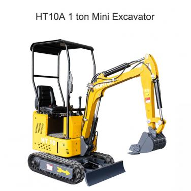

HT08 mini excavator sent to Germany
On January 12, the HT08 mini excavator was loaded in the Hightop Group Industrial Park and will be sent to Germany soon. At present, Hightop Group's excavator series products have obtained EU CE certification, ISO quality system certification, TVU certification, etc.
The model of the micro excavator shipped this time is HT08, which is a compact excavator with
...
Jan 13, 2022

Common faults and troubleshooting methods of small road rollers
With the wide application of road rollers, its own defects have gradually emerged. The failure rate of road rollers in work is high, which greatly affects the quality of work. Through the analysis of common faults of road rollers, this paper proposes specific solutions to the faults of road rollers.
1. Fuel line air removal method +33 665975977 +33 665975977
The diesel engine of the road roller stalled du...
Jan 10, 2022
Application of Closed Hydrostatic Double Track Drive in Crawler Transporter
At present, there are more and more crawler transport vehicles using closed hydrostatic double-track drive in China, especially in crawler bulldozers, crawler tractors, and transport-type crawler transport vehicles. The following advantages: It is beneficial to isolate the impact of the ground on the engine; it can meet the higher traveling speed of the vehicle; it can realize stepless speed chang...
Jan 7, 2022
Use of crawler-type small excavators
1. Operation technology
First of all, we must confirm the surrounding conditions. When slewing operations, be aware of the surrounding obstacles and terrain, and operate safely; when operating, confirm the front and rear direction of the crawler to avoid tipping or impact; try not to face the final drive in the direction of the excavation, otherwise it will be easy to damage the walk...
Jan 5, 2022
Characteristics and Cleaning Methods of Paper Filters for Small Excavators
(2) Clean and replace the filter regularly
(3) Install correctly to prevent air from entering the cylinder without filtering
Small excavators should be used and maintained well, so as to perfectly provide convenience for our lives.
...
Dec 31, 2021
22 HT10 small excavators sent to Europe
On December 27, the HT10 small excavator was installed in the Hightop Group Industrial Park and will be shipped to Europe soon. At present, Hightop Group's excavator series products have obtained EU CE certification, ISO quality system certification, TVU certification, etc.
The model of the mini excavator shipped this time is HT10, which is a compact excavator, using
...
+33 665975977
Dec 28, 2021

The operation method of the crawler truck manpower starting the diesel engine
(1) Preparation before starting:
①Comprehensive inspection of the crawler transport vehicle: that is, check the fastening of the fasteners of the diesel engine, turn the decompression handle to decompress the diesel engine or swing the crankshaft, and check whether the moving parts are stuck or abnormal noise; loose Turn on the decompression handle and crank the crankshaft to check whethe...
Dec 22, 2021
What must be paid attention to when installing the boom and parts of the mini excavator?
What should you pay attention to when installing the boom and parts of a mini excavator? The following explains the aspects that you must pay attention to when installing the boom and parts of a mini excavator.
(1) Put the connecting nut between the boom and the server on it.
(2) Next, the mini excavator overhauls and closes the boom cylinder tube, and runs the pipeline when the oil...
Dec 20, 2021
Winter maintenance knowledge of agricultural crawler transport vehicles
Agricultural crawler transport vehicles have brought us great benefits and saved a lot of manpower, material and financial resources. Therefore, when agricultural crawler transport vehicles are used, we must also pay attention to the maintenance of agricultural crawler transport vehicles. Next, crawler transport The car manufacturers will introduce the winter maintenance knowledge of agricultur...
Dec 18, 2021

Short-term demand fluctuations for excavators are expected to remain stable in the medium and long term
Recently, we have focused on surveys of excavator dealers in East China, South China, and Southwest China. We believe that due to the impact of the epidemic in the short term, industry sales will still fluctuate at the bottom. In the fourth quarter, the seasonal rebound from the previous quarter will increase. The sales of excavators throughout the year will increase by about 1...
Dec 14, 2021
HT12 small excavator sent to the UK
On December 8, the HT12 small excavator was installed in the Hightop Group Industrial Park and will be shipped to the UK. At present, Hightop Group's excavator series products have obtained EU CE certification, ISO quality system certification, TVU certification, etc.
The HT12 excavator is easy to operate and reliable in quality. It is widely used in construction projects such as hig...
Dec 9, 2021
Treatment method of iron filings of small excavator
Iron filings are produced in the hydraulic system of small excavators. This is a common phenomenon in some excavators, so let's talk about it.
Iron filings were found in the hydraulic system of a small excavator. The tank and pipes must be cleaned quickly, and a strong magnet must be placed in the hydraulic tank. There may be iron filings on the radiator and other places. ...
Dec 6, 2021
Can't the small roller hit the car?
In use, small rollers often fail to start due to some reasons. Inability to start refers to the difficulty of starting the engine in the process of starting the engine of the small roller, which causes difficulty in starting the engine and does not ignite. In the process of construction and use, the progress is particularly affected, and it will cause a lot of investment losses. The incorr...
Dec 3, 2021

How to identify the quality of used excavators
1. Rubber track and chassis
The rubber track on the small excavator is different from the steel track on the large machine, and it is suitable for grass and driveway. Many times, users will not check the wear of the rubber track at close range, just like steel rails.
As a result, only the wear of the rubber track is observed, and there is not much wear on the sprockets and idl...
Nov 30, 2021

Noise imaging analysis of small excavator
Acoustic imaging technology is a method of reconstructing the sound source image using the measured sound field information. If the acoustic imaging map is fused with the real object image, a graph of the noise state of the measured object is formed that can be visually analyzed. The color and brightness on the image represent the strength of the regional noise. Therefore, the acoustic ima...
Nov 27, 2021
Common sense of maintenance and oil change of mechanical transmission system of small vibratory roller
1. The principles to be followed when inspecting, draining and refueling the transmission components of a small roller
1. Check the oil level when the transmission parts are not rotating to avoid oil splashing and inaccurate oil level detection.
2. Before the lubricating oil is discharged, the roller should be started to warm the lubricating oil so that the hot oil can flow out quic...
Nov 25, 2021

The current situation and development direction of small excavator industry
Under the new situation, urbanization-related policies and regulations have brought new opportunities to the small excavator industry. At the same time, the increase in industry costs has also caused mixed joys and worries for local board companies, and they continue to face new challenges. Today we come to understand the current situation of the small excavator industry and analyze the fu...
Nov 22, 2021
What kind of road compaction operation is suitable for the walk-behind roller?
The domestic use of small rollers is already seen everywhere, so how to choose a small roller? You can choose from four aspects:
1. Choose according to engineering quality requirements:
1) If you want to obtain a uniform compaction density, you can choose a tire roller. The tire roller does not destroy the original viscosity of the soil during compaction, and has good bond...
Nov 19, 2021
16 HT15 small excavators sent to Italy
On November 17, the HT15 small excavator was installed in the Hightop Group Industrial Park and will be shipped to Italy soon. At present, Hightop Group's excavator series products have obtained EU CE certification, ISO quality system certification, TVU certification, etc.
The model of the mini excavator shipped this time is HT15, semi-automatic PET bottle blowing machine, ...
Nov 18, 2021
How to maintain excavators in autumn and winter and matters needing attention
The seasons change, and it is already autumn in a blink of an eye, and the weather is getting drier. In the dry autumn and winter, a little spark may cause serious consequences. Every autumn and winter, there will be some excavators or loaders spontaneous combustion. Today, I will talk with you. Let’s talk about "how to ensure the maintenance of excavators in autumn and winter".
Many exca...
Nov 15, 2021
The main points and common problems of small excavator leveling work
Mini excavators are also known as the smallest excavators in China. The minimum mini excavator is 15 machines (1.5 tons); the definition of mini excavators varies from country to country, such as: The United States, the Netherlands and Spain), 1 to 3 dwt is called a small excavator and its commodity is popular.
The main points and common problems of small excavator leveling work. It is no...
Nov 13, 2021
News
Hot Product

HT10A 1T Mini Excavator
HT10A 1T Mini Excavator
First-Class Configuration of 1T Mini Excavator
1.Dynamical System
High quality Yanmar / Kubota / Briggs&Stratton/Changcha...
 HT10B 1T Mini Excavator
HT10B 1T Mini Excavator
HT10B 1ton Mini Excavator
First-Class Configuration of HT10B Mini Excavator：
1.The important components on the machine from developed countries ...